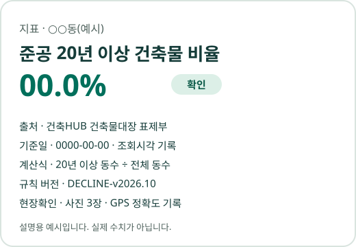

–종
자료 모으기
원장에 이어 붙인 공공 출처 수입니다.
동마다 따로 내려받던 자료입니다.
도시재생 용역사·기초지자체를 위한 기초조사
전국 읍·면·동 공공 데이터 · 출처 연결 원장
노후도·인구·생활 인프라를 같은 기준으로 살피고,
숫자의 출처와 계산 근거까지 한 화면에서 확인하세요.
조건 → 지도 → 근거 → 보고서
출처·기준일·계산식·현장확인 상태를 하나의 원장으로 연결합니다.
조건 칩을 고르면 그 조건에 해당하는 곳을 모두 보여 줍니다.
여러 개를 고르면 모두 맞는 곳만 남습니다.
목록은 행정코드 또는 가나다 순이며, 값 크기로 줄 세우지 않습니다.
지도에서 고른 동의 원장 숫자와 출처를 문장으로 옮깁니다.
평가나 판정은 하지 않습니다.
브라우저 인쇄로 PDF를 만들 수 있습니다.
쇠퇴 3요건의 셀 값과 기준값을 나란히 둡니다.
자료가 없는 요건은 추정하지 않고 '추가확인'으로 남깁니다.
공모 접수 전 몇 주 동안 반복되는 일입니다.
큰 숫자는 지금 리뉴맵 원장에 실제로 들어 있는 값입니다.
–종
원장에 이어 붙인 공공 출처 수입니다.
동마다 따로 내려받던 자료입니다.
–곳
같은 기준으로 계산한 전국 읍·면·동 수입니다.
–가지
숫자 하나에 붙는 근거 항목 수입니다.
출처·기준일·계산식 등입니다.
모든 숫자는 출처가 기록된 원장에서 나옵니다.
판정 결과마다 조문과 규칙 버전이 붙습니다.
필수 사진이 없으면 '확인'이 되지 않습니다.
원장 셀 하나에 값·출처·기준일·계산식·규칙 버전·상태가 함께 붙어 있습니다.
자료가 부족한 칸은 추정으로 채우지 않습니다.

자치구가 공모 후보 2~3개 동의 기초조사를 맡겼습니다.
접수까지 5주가 남은 상황입니다.
⏱ 기초조사 작업 시간
11월 용역사 인터뷰에서 실제 작업 시간 기준선을 잰 뒤 막대를 그립니다.
재기 전에는 숫자를 쓰지 않습니다(사업계획서 주장표 C15).
전국 지도는 행정동 단위 공공 통계입니다.
이 사례는 해운대구 건축물대장을 한 동씩 직접 모아 동수·연면적·세대 기준 노후율을 따로 계산했습니다.
숫자를 누르면 출처와 계산식이 열립니다.
근거를 다루는 도구이기 때문에 일부러 만들지 않습니다.
건축물대장, 주민등록 인구, 도시재생종합정보체계 쇠퇴진단지표 등 공공데이터를 씁니다.
숫자마다 출처, 조회시각, 기준일을 함께 기록합니다.
판정 규칙은 사람이 조문을 보고 작성·승인합니다.
결과마다 근거 조문과 규칙 버전을 표시합니다.
자료가 부족하면 '충족'으로 만들지 않고 '추가확인'으로 표시합니다.
납품본은 기준일을 고정한 스냅샷으로 남습니다.
같은 스냅샷으로 다시 계산하면 같은 값이 나옵니다.
새 기준일과의 차이는 따로 보여 드립니다.
얼굴과 차량번호를 가린 뒤 저장하는 것을 전제로 설계합니다.
소유자 개인정보는 저장하지 않습니다.
HWPX, PDF, 엑셀 조서로 납품하는 것을 목표로 개발하고 있습니다.
시범 납품에서 실제 서식에 맞춰 드립니다.
진행 중이거나 준비 중인 공모·용역을 알려 주세요.